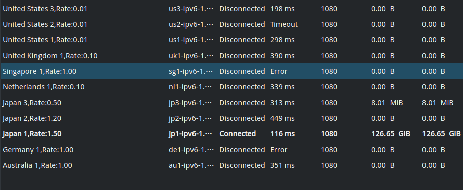
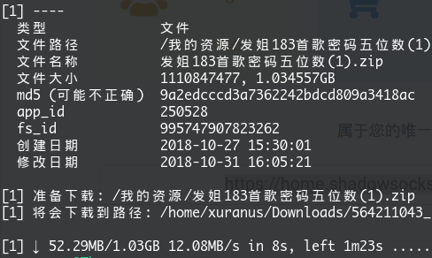

本人坐标东北某三本985，最近赶上学校网络系统大换代，于是帐号就被恶意盗用了，月初60G的流量就给我用掉了70G……这两年网速越来越快，视频画质越来越好，动辄看个直播就是几个G，25快60G是真的不够用的，每个月流量费超出得几十甚至上百。加之这次帐号盗用事件，我便确定了不再用校园网。但奈何隔壁联通的CNC PPPoE太不安全，还卡，还dns污染，于是我又想起了ipv6代理。
目前，教育网基本你已经覆盖ipv6，在我们学校。ipv6的流量不计费，得益于这一点，某些能被解析v6地址的网站（google全家桶）是可以在教育网下使用的，但是国内的网站大部分不行。于是我们需要一个ipv6的shaodowsocks代理，找一台ipv6服务器。
之前我玩vulter的时候，就搭过ipv6的梯子，但最短半天就被封，而且vulter时常抽风，10M最高的带宽，还顶着高ping，使用很不稳定，就弃了。最近我用google搜ss，居然无意搜到一个ipv6的shadowsocks帐号提供商：链接地址。
资费是19澳元，人民币90元/年，无限流量，提供10个左右各地区的服务器。

ss搭建过程很简单，到处都有不在赘述。linux下ss的代理方法上一篇文章也讲过。
本想拿来解决这个月的流量被盗用的问题，没想到体验居然极好，远远出乎我的预料。最近的日本节点延迟稳定150ms。
首先是百度云，百度云代理后下载速度居然能稳定在10m/s

虎牙，斗鱼直播也可以蓝光流畅，国外的twitch，youtube则更加流畅。开源社区少了dns污染，github秒开，平时google和stackoverflow依赖者可以考虑入手。有了这个基本可以不用考虑续费校园网。
存在的缺点则是：
- QQ不能用，可能qq的是udp传输的原因，可能是socks5 udp的bug，也可能的qq的feature
- b站很卡，浏览器端真的束手无策，只能借助youtube寻找替代资源（很多up在youtube同步投稿）但b站客户端似乎有对海外ip的加速功能
- 视频音频资源受限，腾讯，b站，网易云一些资源之后中国ip才能访问，但我没有这个问题，手机用腾讯王卡可以免流。
平时用linux，一些命令行操作需要开代理，加个proxychains前缀之类的。windows可能要麻烦点，需要手动配置git之类工具的代理。